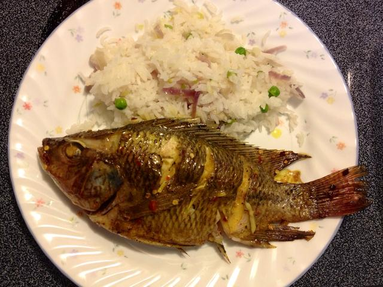
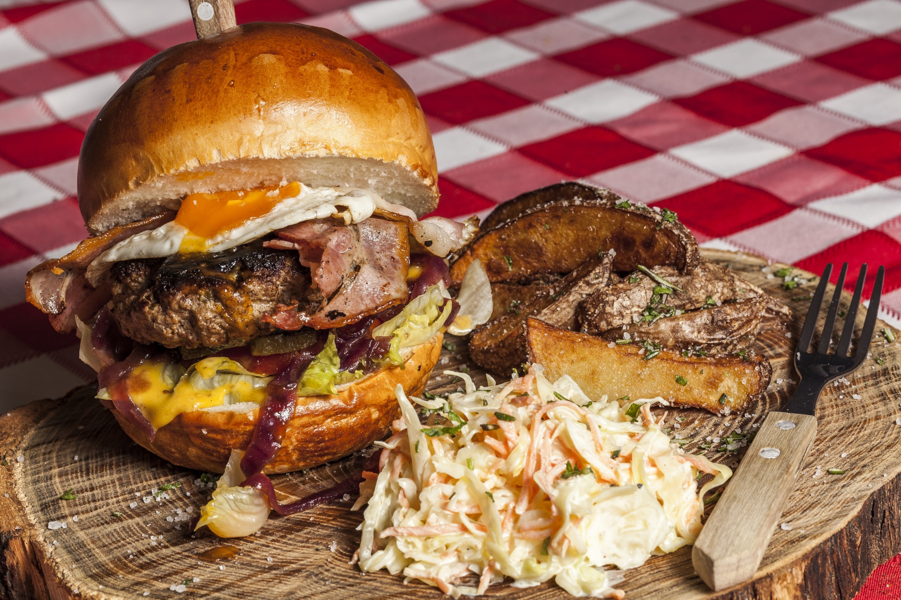

 Do you want to taste the freshest, most delicious seafood in the world? Fresh fish is caught with rod and reel each morning to be served in our restaurants just hours later for lunch and dinner.
 Traveling with a picky eater, or just want to taste the island's version of your favorites back home? Several restaurants on the island serve American style food, including hamburgers and sandwiches.
 There are also several different types of Asian restaurants available, including some
Pan-Asian style that are sure to have something for everyone.
There are also several different types of Asian restaurants available, including some
Pan-Asian style that are sure to have something for everyone.